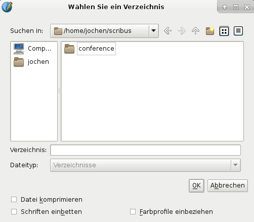
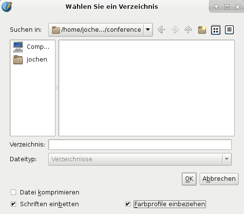
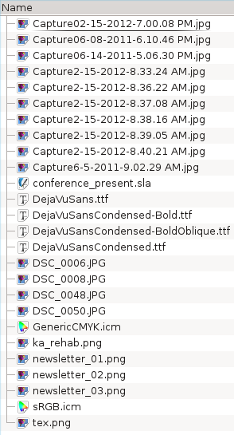
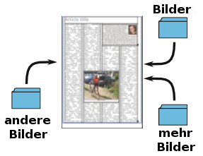
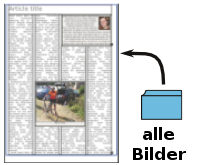

Collect for Output is a specialized way of saving a Scribus document.
If you work with Scribus on a single computer in a noncollaborative way, you won't necessarily ever have a need for Collect for Output. If you work on more than one, and especially if they might have different operating systems, such as one with Linux and one with Windows, you may find this function useful. If you work collaboratively on a Scribus document, then this will be nearly essential, or at least very useful to know about.
If you are highly organized, you probably have a workflow in which you work with a Scribus project in its own directory, with all the images and other content in that directory. Even so, allowing someone else to work on the document may not be as simple as sending the project directory, when you find after the fact that some images were not there or that your collaborator doesn't have one of the fonts used in the document.
Collect for Output could simply be useful for your own needs, to bring all the elements of a document together in one directory as a convenience.
In summary, what Collect for Output entails is creating a directory for your project, selecting that directory, then Scribus takes it from there, saving the document inside, along with its images, and if you wish, font files and color profiles. Technically, you do not need to create a new directory or choose an empty one, but for many uses, having only the files for the particular project in that directory would make the most sense.
When the document is saved all of the links for the images are changed for the document copy in this new directory. Let's show an example.
|  | Here I am about to collect a project consisting of a presentation document. After selecting File > Collect for Output, I am presented with this dialog, which you can see is strictly for working with directories. At this point I have created a new directory named “conference”. This is KDE on Linux, so your dialog may differ, but should still have the same functionality. The next step is to select the conference directory by clicking on it. Don't click OK yet. |
|  | So now our directory is selected, there is nothing inside (this dialog would only show directories). At the bottom I have checked Include Fonts and Include Color Profiles. If I also selected Compress File, this would “gzip” the file, perhaps useful for a very large Scribus document, but not needed here. Compressed files will end in Now it's time to click OK. |
|  | This is a listing of what Scribus has put inside this directory. We see various images, our font files ending in What has happened in Scribus is that you are now working with this new copy of the document, with its content here, instead of the original file and its content, however scattered it might have been. Open this file as you would any other document, by going to its directory and selecting the file. Conceptually you can see how this makes passing this back and forth between collaborators much more efficient. Also consider that you might choose to use Collect for Output to create several versions, with variations on the images for example, by repeating the Collect for Output procedure to some other directory. |
Something you need to be careful about is moving or deleting any of these files outside of Scribus. To understand why this is, look at what happens. On the right is a depiction of our original situation, before running Collect for Output, where we have the Scribus document saved in one directory, and then perhaps images scattered around in others. When we run Collect for Output, all of these files are still in these locations. For each image, Scribus only has a relative path listed when you save the document – relative to where the |  |
Now that you have run Collect for Output, the document file is in your new directory, but so are copies of all the images, and all the relative links point to this new location. If you delete or move an image from the directory, the reference in the document is unchanged, so you have a missing image. One solution might be to go back to your original document and rerun Collect for Output, but this will lose any edits you have made in the file. Plan B in this situation might be to rename your collected file, go back to the original, Collect again, then revert the renamed file Otherwise, you face manually going through the original file to find the missing image, or some even more complicated scheme. Thus the warnings about moving/deleting files outside of Scribus. |  |